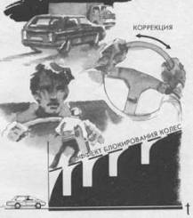

Ступенчатое торможение на постоянной передаче
Реакция на неожиданную опасность у разных водителей неодинакова, но чаще всего она выражается в резком рефлекторном торможении с полным блокированием колес автомобиля. Следствием такой реакции является потеря устойчивости и управляемости автомобиля. Страх сковывает действия водителя, заставляет его увеличить тормозное усилие. Автомобиль на заблокированных колесах продолжает прямолинейное движение и, если остановочного пути недостаточно, совершает наезд или столкновение.
Торможение с постоянным усилием представляет определенную опасность даже для опытного водителя. Эта опасность чаще всего связана с психологическими факторами (страх заставляет сильнее давить на тормозную педаль) и отработанной до автоматизма тормозной реакцией на опасность (чем больше опасность, тем сильнее усилие). Поэтому импульсное торможение всегда безопаснее непрерывного, так как уменьшает вероятность совершения грубой ошибки, хотя теоретически оно обусловливает серьезные потери из-за неполного использования тормозных возможностей автомобиля.
Начинать торможение, когда скорость автомобиля высока, а коэффициент сцепления неизвестен, лучше всего коротким тормозным импульсом, который позволит определить скользкость покрытия. Следующие за ним тормозные усилия можно увеличивать и по силе, и по продолжительности, так как чем ниже скорость, тем позже возникнет блокирование колес. Это связано с так называемым динамическим коэффициентом сцепления, на который существенно влияет скорость автомобиля. Автогонщики знают, что движение со скоростью больше 200 км/ч можно сравнить с движением по льду, когда даже небольшая ошибка приводит к потере устойчивости и управляемости. Одним из секретов ступенчатого торможения является использование кратковременного растормаживания для коррекции устойчивости. На мощный тормозной импульс автомобиль реагирует рысканьем из-за неодинаковой реакции четырех тормозных устройств колес и из-за неоднородности внешне одинакового покрытия. Опытный водитель не ждет, когда суммарные колебания автомобиля в результате многих тормозных импульсов приведут к возникновению критического заноса, а стремится каждый период растормаживания использовать для стабилизации автомобиля. Поэтому внешним признаком профессионализма будет полное сохранение курсовой устойчивости при самом интенсивном торможении.

Начинайте экстренное торможение коротким тормозным импульсом. Увеличивайте силу и продолжительность каждого последующего действия. Растормаживая колеса между импульсами, успевайте корректировать устойчивость короткими рывковыми действиями рук на рулевом колесе.
Негативными явлениями, связанными с интенсивным торможением, являются многократные блокирования задних относительно разгруженных колес. Избежать этих явлений позволяет переключение понижающих передач по ходу торможения, что дает антиблокировочный эффект на ведущих колесах. Чем ниже передача, больше тяга двигателя, тем труднее заблокировать колесо и тем устойчивее автомобиль при торможении. Однако этот прием, а точнее, серия приемов, связанных с особенностями включения сцепления, управления рычагом коробки передач и “перегазовками”, недоступен для необученного водителя. Даже обычное переключение без дополнительных операций сложно, так как чтобы выполнить его профессионально, нужны ежедневные тренировки, включающие тысячи(!) повторений. Поэтому для непрофессионала лучше использовать простейший вариант ступенчатого торможения на постоянной передаче, описанный ранее, а комбинированное торможение по полной программе оставить для спортсменов и профессиональных водителей с большим практическим опытом. Притом, начиная плавное торможение, нужно помнить, что при малейших проблемах, связанных с потерей устойчивости, нужно перейти к ступенчатому способу и ни в коем случае не пытаться нажать и держать в таком положении тормозную педаль.